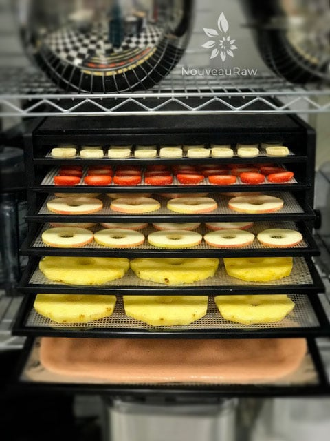

Using Dehydrators
Using Dehydrators

Owning a dehydrator will help equip your kitchen with the right tools. It will open up a whole new world of raw culinary preparation and in preserving foods with the most nutrients left intact.
Why we dehydrate foods:
- Dehydration is the process of removing water from food. Why would we do this? There are several reasons. It extends the shelf life of your food. You can create breads, crackers, and chips, thus satisfying the “crunch” factor that is often missed by those who choose to follow a raw food diet.
- You can also use your dehydrator to warm foods.
- Dehydrated foods intensify in flavor, color, and can add different textures to your meals as well.
- One thing to remember is that when you eat dehydrated foods, be sure to drink plenty of fluids.
When will I use a dehydrator with raw foods?
- To “slow bake” raw breads, crackers, cookies, cakes, and many other dishes.
- To thicken sauces. You can make a “reduction” just like you do in the cooking world in your dehydrator. Simply place your sauce in a glass, uncovered dish, setting the temp at around 115 degrees (F) for 2-3 hours.
- To warm foods while maintaining its “enzymatic integrity.” Such as raw soups.
- To soften coconut oil and raw cacao butter gently.
- To speed up the marinating of vegetables. Place your thinly cut veggies and marinating sauce in a covered glass container and dehydrate for 1-2 hours. It will speed up the process intensifying the flavors, softening the vegetables, and giving it a cooked appearance.
 What can I dehydrate?
What can I dehydrate?
- Drying is a wonderful way to keep your abundance of homegrown fruit, or farmer’s market finds for months after the harvest is over. Always package your dried fruits in a tightly sealed container and store in a cool, dry space for optimum shelf life.
- Using a food dehydrator is suitable for a variety of foods, including:
- Fruits
- Vegetable
- Herbs
- Seeds
- Cheese
- Yogurt
- Raw cookies/bars
- Raw dishes
- Drying Herbs: Here are some straightforward tips to keep in mind when drying herbs to use in your everyday cooking! You’ll love how they bring out the flavor in your favorite foods and dishes!
-
- Remember that the best time to harvest most herbs for drying is just before the flowers first open when they are just about to bud. Consider gathering your herbs in the early morning after the dew has evaporated, and you will minimize wilting.
- Trim off any dead or discolored plant parts and rinse your precious herbs in cool water and gently shake them to remove excess moisture – be careful not to bruise the leaves!
- Always store your dehydrated herbs in airtight containers free from moisture and sunlight. You don’t want sunlight reaching your herbs as it will fade the color and weaken the flavoring oil.
What temperature should I use?
- In recent research by The Excalibur Dehydrator Company, they suggest that it is better to begin the dehydration process at 145 degrees (F) for the initial stage of the drying process. The reasoning is that as the food is dehydrating, it literally “sweats out” the moisture it contains. By doing this, we are inhibiting bacterial growth by reducing the time the food spends in the dehydrator.
- So in many recipes, you might notice that they start the dehydration temperature a higher temperature around 145 degrees. Then the temperature is reduced down to 105-115 degrees after a few hours (will be indicated on the recipe). I know what many of you are thinking….”Am I killing the valuable enzymes?” The answer is NO; the food is still considered raw, the nutrition and the enzymes are still intact. Should a recipe call for this process, make sure you don’t forget to turn the temperature back down; otherwise, you will indeed lose all the benefits of being raw. The process of starting at a higher temperature is so that the bulk of moisture can be removed, thus speeding up the overall dry time and preventing fermentation. Because there is so much moisture, in the beginning, the food doesn’t heat up; it stays relatively cool.
- Key to remember – Do not dehydrate above 115 degrees, unless you following the formula above.
How long do I dehydrate my foods?
- There isn’t a set answer on this when it comes to complicated recipes. It mainly depends on your personal preference on what the overall outcome will be. For example, take a cracker recipe… you can turn that recipe into a bread recipe if you wanted just by removing the mixture from the dehydrator before it gets too crispy.
- Keep in mind if you have oils in your recipe, it may never get really crispy anyway. Oils don’t release moisture.
- I have made a lot of different raw cookies that don’t even require dehydration at all, but sometimes I put them in there to create a crunch on the outer skin or to warm them. Refer to the paragraph above regarding how you can speed up your drying time.
- Be sure to let your food cool for 10-20 minutes before sealing in an airtight container.
- Key to remember – When all the moisture is removed from your food, you have a much longer shelf life. If you remove your food before it’s completely dry and moisture remains, it won’t last as long and has a chance of fermenting a lot sooner.
Can I dehydrate different foods at the same time?
- I don’t recommend dehydrating savory foods with sweet foods. The flavors could influence one another. Nothing like a sweet chocolate cookie with a hint of garlic?! It’s along with the same concept of your cutting board. You should always have one side designated for savory foods (garlic, etc.) and the other side for your sweet ingredients.
What dehydrator should I buy?
- Again, I am going to share my personal preference, again based on experience. I am 100% sold on the Excalibur 9 tray dehydrator. The Excalibur has the Parallexx Horizontal-Airflow Drying System, which evenly distributes air, eliminating “hot” spots. It also has a thermostat that controls the temperature. It uses mesh and Teflex sheets. These are non-stick sheets that are used whenever the food to be dehydrated is of a more liquid-like consistency that could spill through the plastic net sheet that is consistently used on the dehydrator tray. I have heard a few arguments to where some people feel that this machine is too large. My response to that is that it doesn’t have to become part of your kitchen decor. For instance, I have mine in the laundry room. The gentle hum that comes from it doesn’t bother me at all. But if that is a bother, find another room or spot that you can use it in rather than your kitchen counter.
- I recommend the Excalibur
Tips and Tricks to remember:
- Remember to slice or dice your food uniformly and thinly so that you maintain even dehydration.
- Start your dehydration at 145 degrees for 1-2 hours, then turn down to 105 degrees.
- If you don’t have teflex sheets, you can use parchment paper or brown paper bags.
- Check your foods periodically as they are drying. Test flavors and textures to get the desired outcome.
- Keep your dehydrator clean!
- Try to maximize its use and load all the trays. You can dry different types of foods at the same time, but remember to keep sweets and savory foods separate.
- Always start with fresh, good quality food.
- Cool all dehydrated food before storing it. Choose airtight containers or plastic freezer bags to keep moisture out.
- A key element in learning how to dehydrate foods is to recognize that the smaller the pieces, the faster they will dehydrate. Also, a food high in fructose, like fruit, will be leathery when it is finished with the dehydrating process.
© AmieSue.com